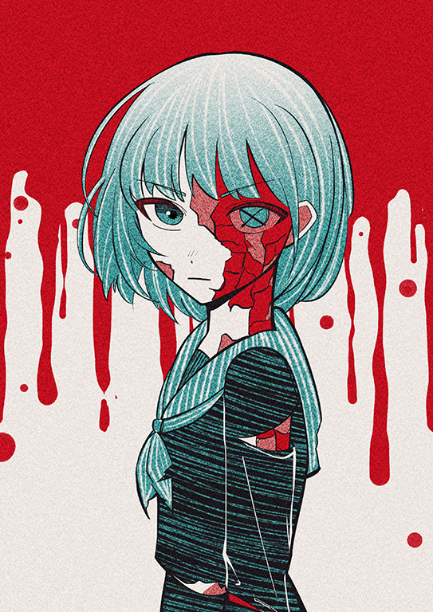
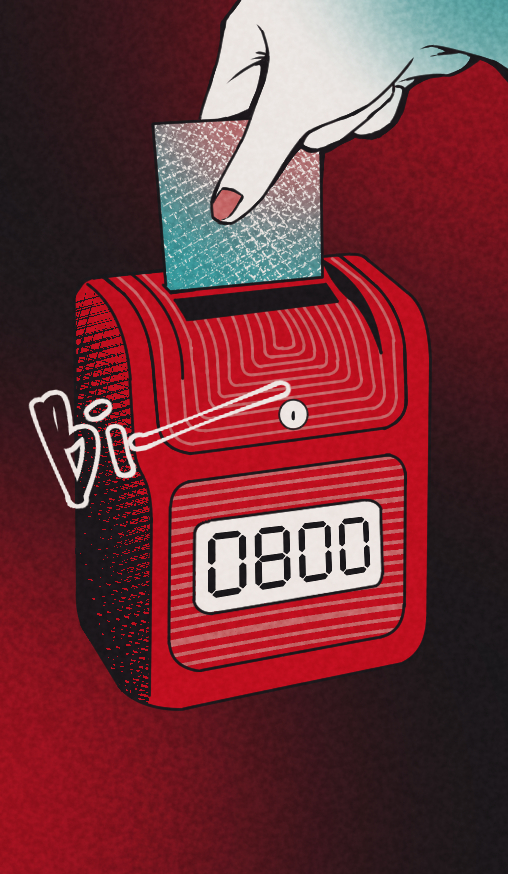
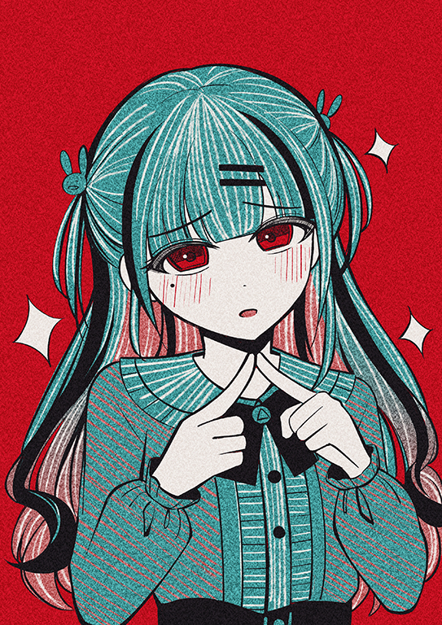
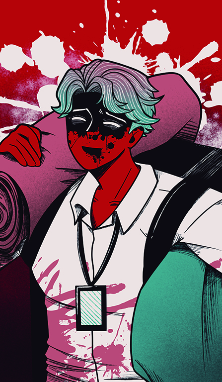
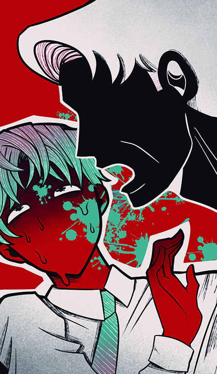
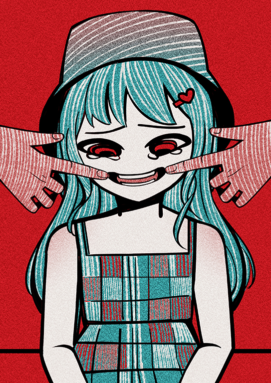
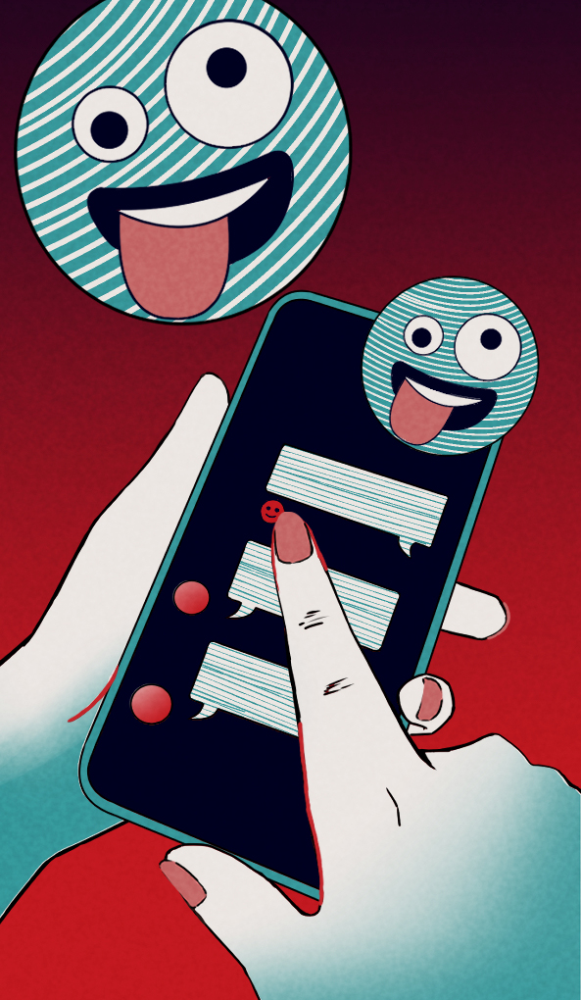
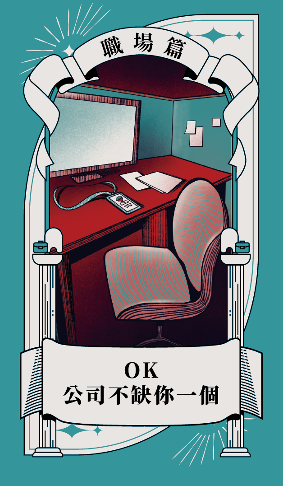
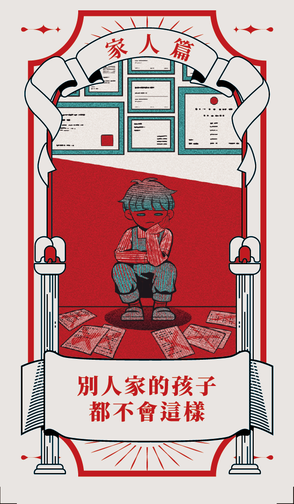
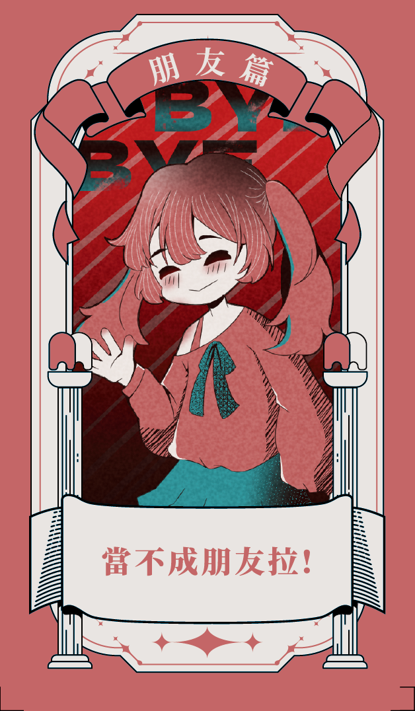

EMOTION
EMOTION
EMOTION








愛，不該是一場迷霧
識別情緒勒索的 F.O.G. 迷陣
（ 滑鼠懸停撥開迷霧 ）
F
Fear
恐懼「你如果敢走，我們就完了。」
利用你的不安。你不是不想拒絕，你是「不敢」。
O
Obligation
責任「我養你這麼大，你這點忙都不幫？」
利用你的善良。將他的需求包裝成你的「義務」。
G
Guilt
罪惡感「沒關係，反正我就是沒人愛。」
利用你的愧疚。扮演受害者，讓你覺得「都是我的錯」。
THE TRAP
情緒勒索的六大循環
01
要求 (Demand)
這通常不是「詢問」，而是「命令」。
02
抵抗 (Resistance)
你覺得哪裡怪怪的，試著婉拒。
03
施壓 (Pressure)
對方開始跳針：「你變了」。
04
威脅 (Threat)
關鍵轉折。如果不順意，後果很嚴重。
05
順從 (Compliance)
為了停止爭吵，你投降了。
06
重複 (Repetition)
對方學會了，下次繼續。
SOLUTION
打破循環 S.O.S
01
S
Stop 停下來
別急著回話！這不是戰爭。
02
O
Observe 觀察
深呼吸，像個局外人。
03
S
Strategize 策略
溫柔但堅定地守住底線。


